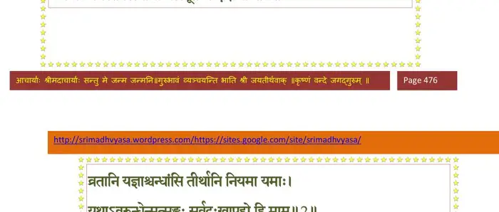
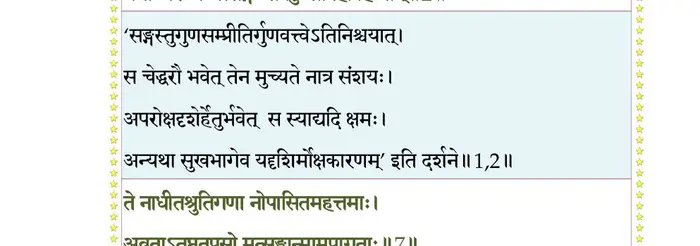
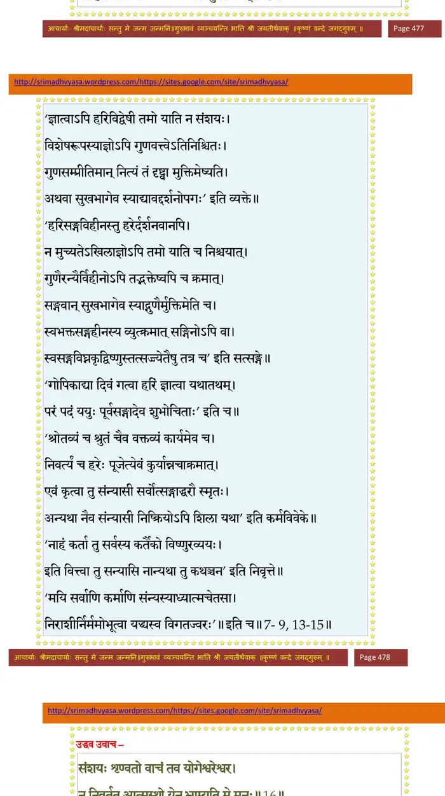
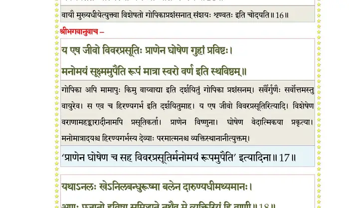
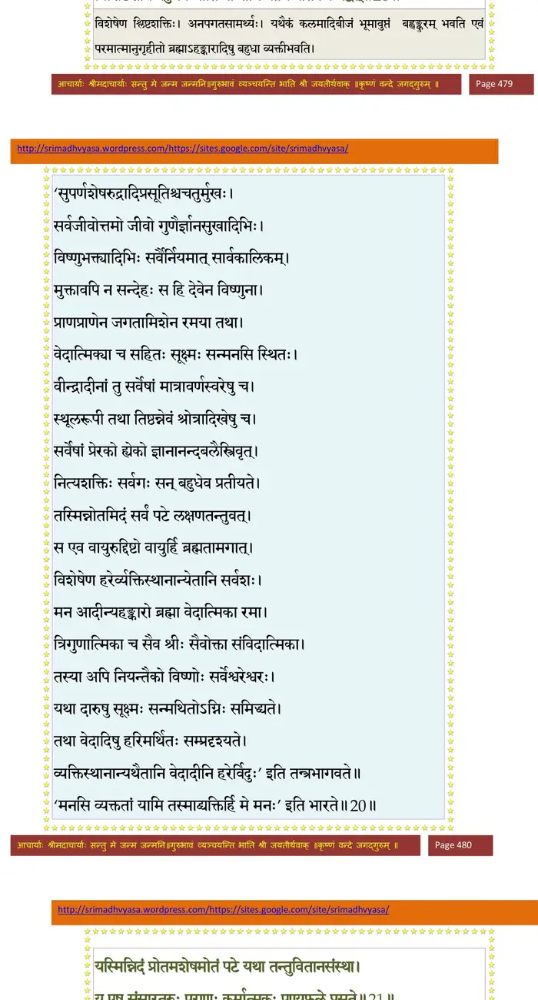
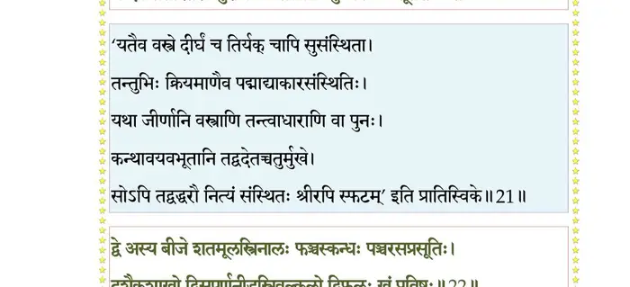
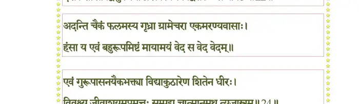
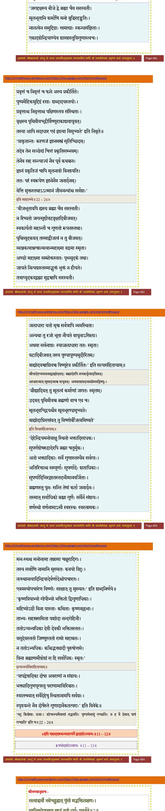

स्कन्ध 11 · अध्याय 12
श्लोक १
श्रीभगवानुवाच–
न रोधयति मां योगो न साङ्ख्यं धर्म एव च ।
न स्वाध्यायस्तपस्त्यागो नेष्टापूर्ते न दक्षिणाः।। १ ।।
न रोधयति मां योगो न साङ्ख्यं धर्म एव च ।
न स्वाध्यायस्तपस्त्यागो नेष्टापूर्ते न दक्षिणाः।। १ ।।
भागवततात्पर्यनिर्णय

श्लोक २
व्रतानि यज्ञाश्छन्दांसि तीर्थानि नियमा यमाः ।
यथाऽवरुन्धेन्मत्सङ्गः सर्वदुःखापहो हि माम्।। २ ।।
यथाऽवरुन्धेन्मत्सङ्गः सर्वदुःखापहो हि माम्।। २ ।।
भागवततात्पर्यनिर्णय

श्लोक ३
मत्सङ्गेन तु दैतेया यातुधाना मृगाः खगाः ।
गन्धर्वाप्सरसो नागाः सिद्धाश्चारणगुह्यकाः ।। ३ ।।
गन्धर्वाप्सरसो नागाः सिद्धाश्चारणगुह्यकाः ।। ३ ।।
श्लोक ४
विद्याधरा मनुष्येषु वैश्याः शूद्राः स्त्रियोऽन्त्यजाः ।
रजस्तमःप्रकृतयस्तस्मिंस्तस्मिन् युगेऽनघ ।। ४ ।।
रजस्तमःप्रकृतयस्तस्मिंस्तस्मिन् युगेऽनघ ।। ४ ।।
श्लोक ५
बहवो मत्पदं प्राप्ता त्वाष्ट्रकावन्तिकादयः ।
वृषपर्वा बलिर्बाणो मयश्चाथ विभीषणः ।। ५ ।।
वृषपर्वा बलिर्बाणो मयश्चाथ विभीषणः ।। ५ ।।
श्लोक ६
सुग्रीवो हनुमान् ऋक्षो गजो गृध्रो वणिक्पथः ।
व्याधः कुब्जा व्रजे गोप्यो यज्ञपत्न्यस्तथाऽपरे ।। ६ ।।
व्याधः कुब्जा व्रजे गोप्यो यज्ञपत्न्यस्तथाऽपरे ।। ६ ।।
श्लोक ७
ते नाधीतश्रुतिगणा नोपासितमहत्तमाः ।
अव्रतातप्ततपसो मत्सङ्गान्मामुपागताः ।। ७ ।।
अव्रतातप्ततपसो मत्सङ्गान्मामुपागताः ।। ७ ।।
भागवततात्पर्यनिर्णय
श्लोक ८
केवलेन हि भावेन गोप्यो गावः खगा मृगाः ।
येऽन्ये मूढधियो नागाः सिद्धा मामीयुरञ्जसा ।। ८ ।।
येऽन्ये मूढधियो नागाः सिद्धा मामीयुरञ्जसा ।। ८ ।।
भागवततात्पर्यनिर्णय
श्लोक ९
यं न योगेन सांख्येन दानव्रततपोऽध्वरैः ।
व्याख्यास्वाध्यायसंन्यासैः प्राप्नुयाद् यत्नवानपि ।। ९ ।।
व्याख्यास्वाध्यायसंन्यासैः प्राप्नुयाद् यत्नवानपि ।। ९ ।।
भागवततात्पर्यनिर्णय
श्लोक १०
रामेण सार्धं मधुरां प्रणीते श्वाफल्किना मय्यनुरक्तचित्ताः ।
विगाढभावेन न मे वियोगतीव्राधयोऽन्यद् ददृशुः सुखाय ताः ।।१०।।
विगाढभावेन न मे वियोगतीव्राधयोऽन्यद् ददृशुः सुखाय ताः ।।१०।।
श्लोक ११
यासां क्षपाः प्रेष्ठतमेन नीता मयैव वृन्दावनगोचरेण ।
क्षणार्धवत् ताः पुनरङ्ग तासां हीना मया कल्पसमा बभूवुः।।११।।
क्षणार्धवत् ताः पुनरङ्ग तासां हीना मया कल्पसमा बभूवुः।।११।।
श्लोक १२
ता नाविदन् मय्यनुषङ्गबद्धधियः स्वमात्मानमदस्तथेदम् ।
यथा समाधौ मुनयोऽब्धितोये नद्यः प्रविष्टा इव नामरूपे।। १२ ।।
यथा समाधौ मुनयोऽब्धितोये नद्यः प्रविष्टा इव नामरूपे।। १२ ।।
श्लोक १३
मत्कामा रमणं जारं मत्स्वरूपा(जारमस्वरूप)विदोऽबलाः ।
ब्रह्म मां परमं प्रापुः शतशोऽथ सहस्रशः ।। १३ ।।
ब्रह्म मां परमं प्रापुः शतशोऽथ सहस्रशः ।। १३ ।।
भागवततात्पर्यनिर्णय
श्लोक १४
तस्मात् त्वमुद्धवोत्सृज्य चोदितां प्रतिचोदनाम् ।
प्रवृत्तं च निवृत्तं च श्रोतव्यं श्रुतमेव च ।। १४ ।।
प्रवृत्तं च निवृत्तं च श्रोतव्यं श्रुतमेव च ।। १४ ।।
भागवततात्पर्यनिर्णय
श्लोक १५
मामेकमेव शरणमात्मानं सर्वदेहिनाम् ।
याहि सर्वात्मभावेन यस्मिन्नस्त्यकुतोभयम् ।। १५ ।।
याहि सर्वात्मभावेन यस्मिन्नस्त्यकुतोभयम् ।। १५ ।।
भागवततात्पर्यनिर्णय

श्लोक १६
उद्धव उवाच–
संशयः शृण्वतो वाचं तव योगेश्वरेश्वर ।
न निवर्तत आत्मस्थो येन भ्राम्यति मे मनः ।। १६ ।।
संशयः शृण्वतो वाचं तव योगेश्वरेश्वर ।
न निवर्तत आत्मस्थो येन भ्राम्यति मे मनः ।। १६ ।।
भागवततात्पर्यनिर्णय

श्लोक १९
श्रीभगवानुवाच–
य एष जीवो विवरप्रसूतिः प्राणेन घोषेण गुहां प्रविष्टः ।
मनोमयं सूक्ष्ममुपैति रूपं मात्रा स्वरो वर्ण इति स्थविष्ठम् ।। १९ ।।
य एष जीवो विवरप्रसूतिः प्राणेन घोषेण गुहां प्रविष्टः ।
मनोमयं सूक्ष्ममुपैति रूपं मात्रा स्वरो वर्ण इति स्थविष्ठम् ।। १९ ।।
भागवततात्पर्यनिर्णय
श्लोक १८
यथाऽनलः स्वे(खे)ऽनिलबन्धुरूष्मा बलेन दारुण्यधिमथ्यमानः ।
अणुः प्रजातो हविषा समिद्ध्यते तथैव मे व्यक्तिरियं हि वाणी।। १८ ।।
अणुः प्रजातो हविषा समिद्ध्यते तथैव मे व्यक्तिरियं हि वाणी।। १८ ।।
भागवततात्पर्यनिर्णय
श्लोक १९
एवं गतिः कर्म रतिर्विसर्गो घ्राणो रसो दृक् स्पर्शः श्रुतिश्च ।
सङ्कल्पविज्ञानमथाभिमानः सूत्रं रजः सत्वतमो विकारः।। १९ ।।
सङ्कल्पविज्ञानमथाभिमानः सूत्रं रजः सत्वतमो विकारः।। १९ ।।
श्लोक २०
अयं हि जीवस्त्रिवृदब्जयोनिरव्यक्त एको जगतां यथाऽऽद्यः ।
विश्लिष्टशक्तिर्बहुधै(धे)व भाति बीजानि योनिं प्रतिपद्य यद्वत् ।।२०।।
विश्लिष्टशक्तिर्बहुधै(धे)व भाति बीजानि योनिं प्रतिपद्य यद्वत् ।।२०।।
भागवततात्पर्यनिर्णय

श्लोक २१
यस्मिन्निदं प्रोतमशेषमोतं पटे यथा तन्तुवितानसंस्था ।
य एष संसारतरुः पुराणः कर्मात्मकः पुष्पफले प्रसूते।। २१ ।।
य एष संसारतरुः पुराणः कर्मात्मकः पुष्पफले प्रसूते।। २१ ।।
भागवततात्पर्यनिर्णय

श्लोक २२
द्वे अस्य बीजे शतमूलस्त्रिनालः पञ्चस्कन्धः पञ्चरसप्रसूतिः ।
दशैकशाखो द्विसुपर्णनीडस्त्रिवल्कलो द्विफलः खं प्रविष्टः।। २२ ।।
दशैकशाखो द्विसुपर्णनीडस्त्रिवल्कलो द्विफलः खं प्रविष्टः।। २२ ।।
भागवततात्पर्यनिर्णय

श्लोक २३
अदन्ति चैकं फलमस्य गृध्रा ग्रामेचरा एकमरण्यवासाः ।
हंसा य एवं (एतं) बहुरूपमिष्टं मायामयं वेद स वेद वेदम्।।२३।।
हंसा य एवं (एतं) बहुरूपमिष्टं मायामयं वेद स वेद वेदम्।।२३।।
श्लोक २४
एवं गुरूपासनयैकभक्त्या विद्याकुठारेण शितेन धीरः ।
विवृश्च्य जीवाशयमप्रमत्तः सम्पद्य चात्मानमथ त्यजास्त्रम्।। २४ ।।
विवृश्च्य जीवाशयमप्रमत्तः सम्पद्य चात्मानमथ त्यजास्त्रम्।। २४ ।।
भागवततात्पर्यनिर्णय

।। इति श्रीमद्भागवते एकादशस्कन्धे द्वादशोऽध्यायः ।।